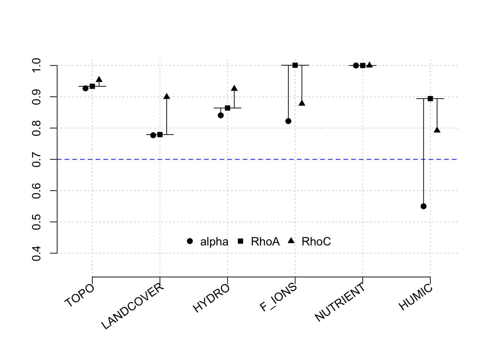

7.5 Model 5: HUMIC early season - streams
ABOUT THIS MODEL - stream samples during peak lower descending to baseflow (August - April 30) n=30 - response is HUMIC.
Our indicators for each latent variable are as follows:
Topo:
–mean distance that allochthonous water has to travel to the stream channel
–mean aspect in radians
–mean subcatchment TWI
Hydro
– log_discharge_m2
– distance.to.outlet
Landcover:
– % of subcatchment pixels with Beetle.kill”, “percent_cut.regenerating”,“percent_Old.Forest”, “percent_Tundra”
– and harvested/regenerating vegetation
LABILE:
– “PARAF_comp_1”, “PARAF_comp_2”,“peak_C_350.450”, “relative_load_comp_1”, “relative_load_comp_2”, “Fluorescence_Index”, “SUVA254”
Cfix_ions
– ions that compound with C to increase recalcitrance
Cgen_nutr
– NO3_mg.l
##
## Results from package seminr (2.3.4)
##
## Path Coefficients:
## HYDRO LANDCOVER F_IONS NUTRIENT HUMIC
## R^2 0.167 0.830 0.473 0.186 0.651
## AdjR^2 0.111 0.825 0.437 0.132 0.601
## TOPO 0.238 0.911 -1.450 -0.093 .
## LANDCOVER -0.613 . 0.980 -0.345 0.682
## HYDRO . . . . -0.154
## F_IONS . . . . 0.028
## NUTRIENT . . . . -0.102
##
## Reliability:
## alpha rhoC AVE rhoA
## TOPO 0.927 0.954 0.873 0.934
## LANDCOVER 0.777 0.900 0.818 0.779
## HYDRO 0.841 0.926 0.861 0.864
## F_IONS 0.822 0.878 0.719 1.001
## NUTRIENT 1.000 1.000 1.000 1.000
## HUMIC 0.550 0.792 0.614 0.894
##
## Alpha, rhoC, and rhoA should exceed 0.7 while AVE should exceed 0.5A plot of result reliability measures: 
7.5.1 Results of bootstrapped PLS
## Original Est. Bootstrap Mean Bootstrap SD T Stat. 5% CI
## TOPO -> LANDCOVER 1.068 1.065 0.066 16.253 0.972
## TOPO -> HYDRO 0.357 0.373 0.142 2.517 0.132
## TOPO -> F_IONS 0.552 0.599 0.108 5.122 0.440
## TOPO -> NUTRIENT 0.417 0.403 0.121 3.455 0.204
## TOPO -> HUMIC 0.751 0.771 0.087 8.656 0.631
## LANDCOVER -> HYDRO 0.486 0.494 0.142 3.414 0.251
## LANDCOVER -> F_IONS 0.479 0.521 0.150 3.196 0.301
## LANDCOVER -> NUTRIENT 0.486 0.463 0.157 3.089 0.180
## LANDCOVER -> HUMIC 0.916 0.931 0.074 12.364 0.803
## HYDRO -> F_IONS 0.368 0.471 0.122 3.009 0.305
## HYDRO -> NUTRIENT 0.781 0.736 0.173 4.506 0.330
## HYDRO -> HUMIC 0.543 0.533 0.136 3.984 0.293
## F_IONS -> NUTRIENT 0.382 0.444 0.148 2.589 0.215
## F_IONS -> HUMIC 0.326 0.433 0.131 2.485 0.239
## NUTRIENT -> HUMIC 0.492 0.450 0.174 2.832 0.150
## 95% CI
## TOPO -> LANDCOVER 1.184
## TOPO -> HYDRO 0.602
## TOPO -> F_IONS 0.769
## TOPO -> NUTRIENT 0.601
## TOPO -> HUMIC 0.903
## LANDCOVER -> HYDRO 0.708
## LANDCOVER -> F_IONS 0.780
## LANDCOVER -> NUTRIENT 0.707
## LANDCOVER -> HUMIC 1.045
## HYDRO -> F_IONS 0.697
## HYDRO -> NUTRIENT 0.904
## HYDRO -> HUMIC 0.733
## F_IONS -> NUTRIENT 0.707
## F_IONS -> HUMIC 0.664
## NUTRIENT -> HUMIC 0.708This gives us the confidence intervals of the HTMT ratio.